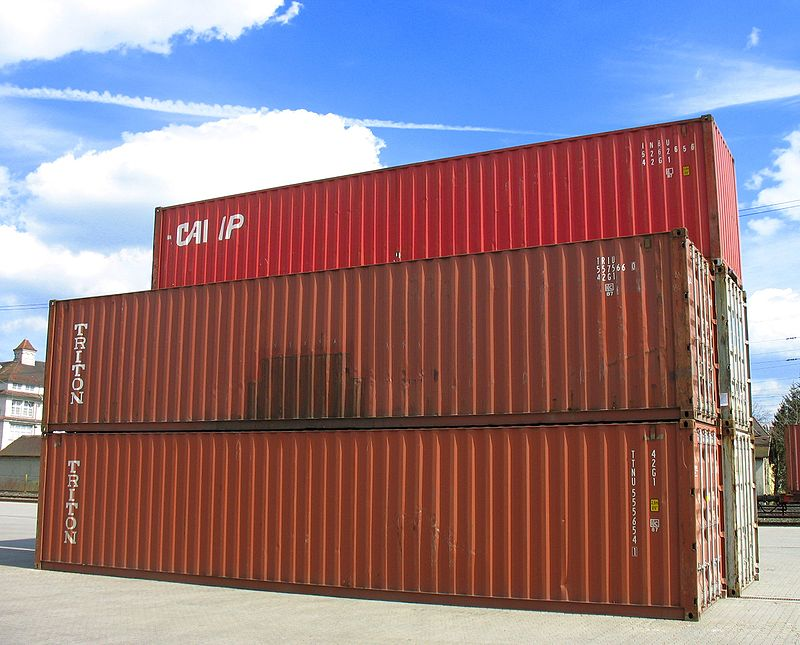

46th ICPC World Championship · Problem Q
Majestic cargo ships, each carrying thousands of shipping containers, roam the world’s seas every day. They make modern trade possible by being so efficient that shipping goods halfway around the world costs only pennies.

Once the ships reach their destination, their standard-size cargo containers are unloaded from the ship onto stacks on land, from which they are moved to trains or trucks that deliver them to their destination. It turns out that moving containers is expensive, so port operators try to minimize the number of moves necessary for delivering cargo.
In this problem, we consider such a container-unloading scenario. We need to unload n containers, which are placed into two stacks built from bottom to top. The placement of each container is at random, with equal probability it will be put onto the first or the second stack (independently of other containers). Once all containers are unloaded, they will be picked up by trucks in a given order. When a truck wants to load a specific container, there are two cases. If the container is on top of its stack, then the container can be moved to the truck without moving any other containers. Otherwise, containers have to be moved from one stack to the other until the requested container is at the top of its stack. At that point the container can be moved onto the truck.
As an example, consider a case of three containers that arrive in order 1, 2, 3. Assume that 1 and 3 are in the first stack, and 2 is in the second. If the containers are moved onto trucks in order 1, 2, 3, then five moves of containers have to take place:
| Stack 1 | Stack 2 | Comment |
|---|---|---|
| 1 3 | 2 | Initial configuration (stacks bottom to top) |
| 1 | 2 3 | Move container 3 from stack 1 to stack 2 |
| 2 3 | Move container 1 to truck | |
| 3 | 2 | Move container 3 from stack 2 to stack 1 |
| 3 | Move container 2 to truck | |
| Move container 3 to truck |
We want to know how many moves are necessary to deliver all containers to the customers. Assuming that container placement is random, we ask you to compute the expected number of moves necessary for a given truck-loading order.
The first line of input contains an integer n (1 ≤ n ≤ 106), the number of containers. The containers are numbered 1, 2, …, n, and are unloaded from the ship in this order. The second line of input contains n integers a1, …, an. These numbers are a permutation of {1, 2, …, n}, and specify the order in which the containers are loaded onto trucks.
Output the expected number of moves necessary to load the containers onto the trucks — this excludes the cost of unloading them from the ship, but includes both moves between stacks and from a stack to a truck. Your answer should have an absolute error of at most 10−3.
5 4 2 5 3 1
7.000
6 1 2 3 4 5 6
13.500